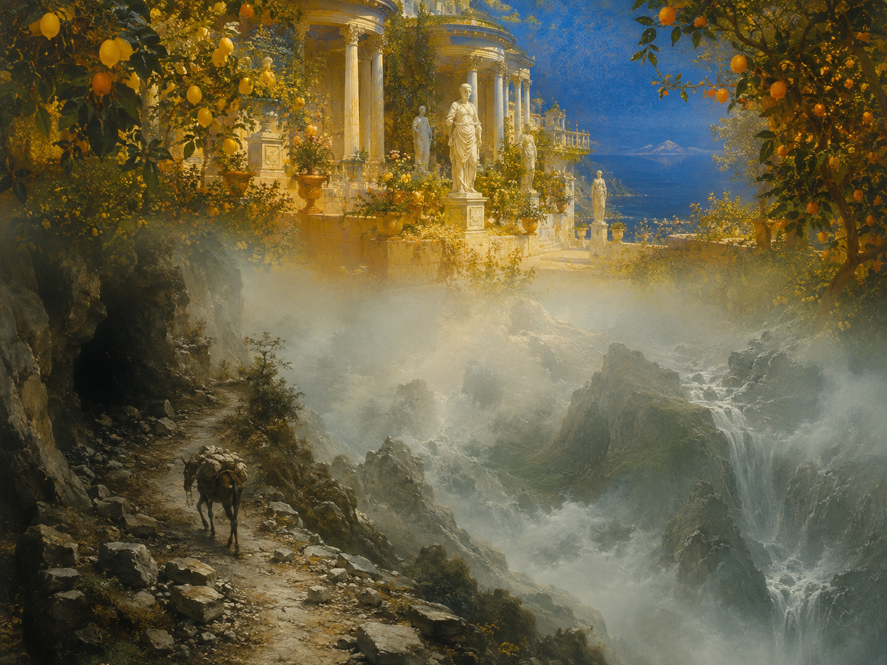

Kennst du das Land, wo die Zitronen blühn,
全诗三节均以 "Kennst du …?" 开头，构成首语重复（Anapher）。blühn 是 blühen 的诗歌省音形式。这一行是德语中最著名的诗句之一，也是"意大利乡愁"（Italiensehnsucht）在德语文学中的经典表述。
迷娘（你可知道那地方）
《威廉·迈斯特的学习时代》第三卷卷首；1815年文集中列入《叙事诗》（Balladen）栏并定题为 Mignon
魏玛古典主义前期
约1782/83年写于《威廉·迈斯特的戏剧使命》创作期，1795/96年随《威廉·迈斯特的学习时代》出版

图片由 AI 生成
Kennst du das Land, wo die Zitronen blühn,
全诗三节均以 "Kennst du …?" 开头，构成首语重复（Anapher）。blühn 是 blühen 的诗歌省音形式。这一行是德语中最著名的诗句之一，也是"意大利乡愁"（Italiensehnsucht）在德语文学中的经典表述。
Im dunkeln Laub die Goldorangen glühn,
dunkeln 是 dunkel 在弱变化第三格单数中因音节省略产生的形式（dunkelen → dunkeln）。《戏剧使命》早期稿此处作 "im grünen Laub"（绿叶间），改为 dunkeln 后与金色的橙子形成更强的明暗对比。
Die Myrte still und hoch der Lorbeer steht,
两个主语（Myrte、Lorbeer）共用一个单数动词 steht，且状语 still / hoch 交叉排列，形成对称的交错语序（Chiasmus）。早期稿作 "…und froh der Lorbeer"。彼得·冯·马特指出：桃金娘是阿佛洛狄忒之树、月桂是阿波罗之树，二者的并置在古典象征体系中暗示男女两性与"少女时代的结束"。
Möcht’ ich mit dir, o mein Geliebter, ziehn!
möcht’ 是 möchte 的省音形式，为 mögen 的第二虚拟式，表达委婉的愿望。三节末行的呼语依次为 Geliebter（爱人）—Beschützer（保护者）—Vater（父亲）；《戏剧使命》早期稿三次都作 Gebieter（主人），歌德的这一修改精准地暗示了迷娘与威廉之间那种混合了爱情、依赖与父女感情的复杂关系。
Und Marmorbilder stehn und sehn mich an:
stehn / sehn 均为省音形式（stehen / sehen）；an…sehen 是可分动词，前缀 an 移至句末。此行是全诗气氛的转折点：前面还是明亮的建筑描写，这里雕像忽然"看着我"，把外景拉入迷娘自身的创伤记忆。
Was hat man dir, du armes Kind, getan?
全诗唯一一句直接引语，说话者是那些大理石雕像。man（泛指的"人们"）保持了施害者的匿名——在小说中读者最终得知，迷娘是竖琴师与其妹妹乱伦所生的孩子。这句怜悯之问在《学习时代》后文中被多次回响（"迷娘之歌里那些同情的大理石雕像"）。
In Höhlen wohnt der Drachen alte Brut,
der Drachen 是复数第二格（今作 der Drachen 或 der Drachens 均有争议，此处为古形），修饰 alte Brut（古老的族类/一窝幼崽）。第三节从明亮的南方风景转入危险的高山意象，暗指翻越圣哥达山口的艰险——歌德本人曾两度从那里遥望意大利而折返。
Geht unser Weg; o Vater, laß uns ziehn!
前两节末行是虚拟愿望（Möcht’ ich…），第三节改为陈述句 "Geht unser Weg"（我们的路就在那里），语气从祈愿转为断言；laß（今作 lass）是 lassen 的命令式，构成使役结构 "laß uns ziehn"（让我们走吧）。
| Infinitiv | Präsens 3. Sg. |
Präteritum | Perfekt | Partizip II | Konjunktiv II | Hilfsverb |
|---|---|---|---|---|---|---|
| kennen | kennt | kannte | hat gekannt | gekannt | kennte | haben |
| ↳ 混合变化动词（词干变元音但用弱变化词尾）；诗中三次以 "Kennst du …?" 开篇。注意与 wissen（知道事实）、können（会）的区别：kennen 指"熟识、认得"。 | ||||||
| blühen | blüht | blühte | hat geblüht | geblüht | blühte | haben |
| ↳ 诗中复数现在时省音形式 blühn（今 blühen）。 | ||||||
| glühen | glüht | glühte | hat geglüht | geglüht | glühte | haben |
| ↳ 意为"灼热地发光、炽燃"；诗中省音作 glühn，与 blühn 押韵。 | ||||||
| mögen | mag | mochte | hat gemocht | gemocht / mögen | möchte | haben |
| ↳ 情态动词；诗中用第二虚拟式省音形式 Möcht’（= möchte），表达委婉的愿望，是本诗情感的核心语法手段。 | ||||||
| ziehen | zieht | zog | ist/hat gezogen | gezogen | zöge | sein（表移动）／haben（表拉拽） |
| ↳ 诗中取"迁移、动身前往"之义（用 sein 作助动词），省音作 ziehn。 | ||||||
| lassen | lässt | ließ | hat gelassen | gelassen / lassen | ließe | haben |
| ↳ 诗中用命令式旧拼法 laß（今 lass），构成使役结构 "laß uns ziehn"。 | ||||||
Kennst du das Land …? / Kennst du das Haus? / Kennst du den Berg …?
Möcht’ ich mit dir, o mein Geliebter, ziehn!
Die Myrte still und hoch der Lorbeer steht,
blühn / glühn / stehn / sehn / ziehn / Möcht’
《迷娘》最早出现在《威廉·迈斯特的戏剧使命》中，后来成为《威廉·迈斯特的学习时代》第三卷的卷首诗。歌德自1782年11月起用了约一年时间写作《戏剧使命》第四卷，此诗大约作于这一时期——也就是说，写在他1786年的意大利之行之前：这首德语中最著名的"意大利之歌"，其实是一位尚未到过意大利的诗人的想象。1815年编纂文集时，歌德把另外三首迷娘之歌收入《选自威廉·迈斯特》一栏，却单单把《你可知道那地方》题为 Mignon 放在《叙事诗》栏的开篇，显示出这首诗在体裁归属上的模糊性。
在小说里，迷娘是威廉从一个杂耍班子手中赎出的少女，唱这首歌时用的是意大利语，威廉起初听不懂全部词句，请她反复吟唱并解释，才得以记录并译成德语——歌德借叙述者之口说，翻译过程中"措辞的原创性"和"表达的稚拙纯真"都流失了。这一虚构的"翻译损耗"设定，使这首诗从一开始就带有自我指涉的意味：它本身就是一首关于"译文永远不是原文"的诗。
此诗是歌德被谱曲次数最多的作品之一，现存约100种作曲，作曲家包括贝多芬、舒伯特、策尔特、舒曼、李斯特、施波尔、柴可夫斯基、胡戈·沃尔夫与鲁宾斯坦等。它引发的仿作与戏拟同样众多，从艾兴多夫《一个无用人的生涯》中的"意大利，那橘子生长的地方"，到埃里希·凯斯特纳1927年的《你可知道那地方，那里大炮开花？》（Kennst Du das Land, wo die Kanonen blühn?），构成了一条延续两个世纪的互文链条。
中文译文为本站学习译文（AI 辅助），采用直译，重点保留三节结构的严格平行、五、六行的短促呼唤，以及末行称谓 Geliebter—Beschützer—Vater 的三度转换（这一转换是全诗的关键，若统一译为"亲爱的"便会失去歌德修改稿本的用意）。第三节末行由虚拟愿望改为陈述句，中译以"我们的路就通向那里"传达其语气变化。已知此诗存在多个中文译本（如钱春绮、杨武能、绿原等译者的翻译），因版权原因本站不转载具体译本全文。
德文正文通过两个独立来源（German Wikipedia 依汉堡版第7卷第145页，与 deutschelyrik.de）逐词核对，三节各七行、词序与内容完全一致。已记录的差异分两类：(1) 版本差异（作者本人修改）：《威廉·迈斯特的戏剧使命》早期稿第2行作 "im grünen Laub"、第4行作 "…und froh der Lorbeer"，且三节末行的呼语原本三次都是 Gebieter，歌德后改为 Geliebter / Beschützer / Vater。本站采用《学习时代》定稿。(2) 编辑排印差异（后世编者）：deutschelyrik.de 采用现代化正字法与略有不同的标点（第4行末作问号、第11行末多一破折号、第7行末作感叹号、第14行末作感叹号、第21行分号作感叹号、laß 作 lass），本站从汉堡版的拼写与标点。需说明的是，本站未直接查阅汉堡版纸质本或手稿，仅依据 Wikipedia 对该版的转录，故上述标点采择属"依二手转录"，建议有条件的读者对照汉堡版原书核实。